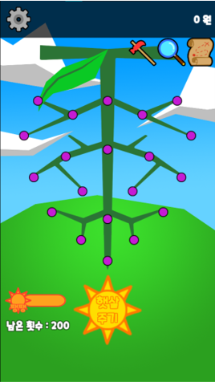
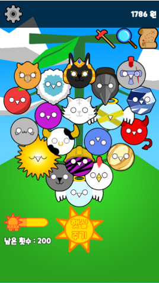
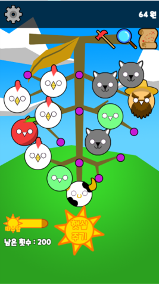
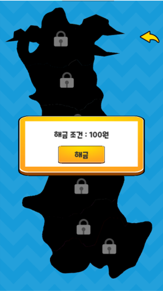
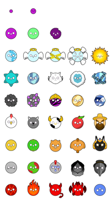
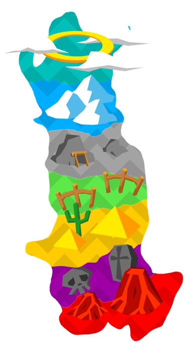

프로젝트 개요
2021년 8월 제작
모바일 게임 (재배)
기획, 개발, 디자인
개인 프로젝트
Unity 제작
여름 방학 때 취미로 진행했던 프로젝트.
여태껏 진행했던 게임 개발 프로젝트에서 잡지 못한 완성도를 최대한 잡아보려 노력한 게임입니다.
아틀라스를 이용하는 등 메모리 최적화에도 관심을 가졌습니다.
여태껏 제작했던 개인 게임 프로젝트 중 가장 완성도가 높습니다.

메인 화면
게임을 실행하면 가장 먼저 보이는 화면입니다.
보라색 점에서 점차 포도가 자라납니다.
가운데 햇살 주기를 통해 좌측 하단 햇살 게이지를 충전할 수 있습니다.
햇살 게이지는 실제 와인을 만들 때 중요한 햇빛의 양으로 결정했습니다.
깜깜, 어둑어둑, 맑음, 따스함, 쨍쨍으로 설정했습니다.
만약 깜깜 상태가 지속되면 포도가 썩습니다.
좌측 상단에 있는 톱니바퀴 UI는 옵션입니다.
우측 상단에 있는 망치, 돋보기 지도 UI는 각각 시설 업그레이드, 포도 품종 연구, 새로운 지역 해금을 위한 씬으로 넘어가는 버튼입니다.

메인 화면 - 성장
포도가 다 자란 모습입니다.
수확 시 우측 상단의 재산이 증가합니다.
햇빛 상태가 좋을수록 포도가 자라는 속도가 빠릅니다.
좌측 하단에 햇살 주기 버튼의 횟수가 표시됩니다.
시간이 지나면 조금씩 횟수가 회복됩니다.

메인 화면 - 줄기 상태
햇빛 상태에 따라 줄기의 색이 변한 모습입니다.
수확한 포도는 다시 씨앗부터 시작합니다.

지도
지도 아이콘 클릭 시 나오는 장면입니다.
지역은 돈 및 시설 업그레이드로 잠금 해제가 가능합니다.
지역 해제 시 새로운 품종의 포도가 등장합니다.
새로운 지역이 열리면 새롭고 더 비싼 품종이 해금됩니다.

포도 캐릭터 아틀라스
성장할 수 있는 포도 종류입니다.
각 행은 성장, 기본, 천국, 설산, 광산, 초원, 사막, 묘지, 지옥 지역에서 해금할 수 있는 포도들입니다.
행마다 같은 테마를 보유하고, 오른쪽으로 갈수록 가격이 높아집니다.
아틀라스로 제작해 하나의 이미지를 잘라 사용했기에 메모리를 아낄 수 있었습니다.

지역 스프라이트
해금할 수 있는 7개 지역입니다.
이 중 4번째에 위치한 초원 지역은 시작 위치입니다.
모양은 와인으로 유명한 이탈리아 국토 모양을 조금 변형시켜 디자인했습니다.
Play Video
.png)